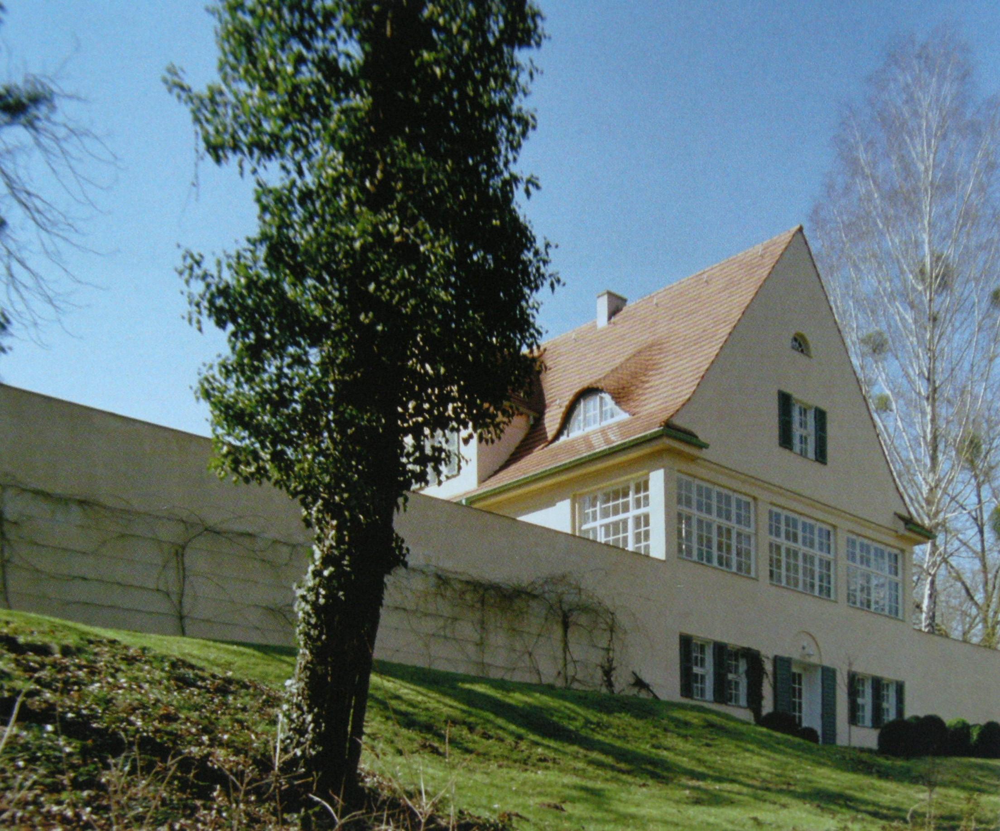

Mies' most famous buildings
-

Riehl House
The Riehl House was Mies' first building. He was twenty-one at the time and was working for Bruno Paul. Here, Mies reiterates much of Paul's classical German style with an austere stucco exterior and a pronounced roof that emphasizes the idea of shelter and home. The interior space pulled inspiration from English cottages and Japanese architecture, in addition to Paul.
Riehl House
The Riehl House was Mies' first building. He was twenty-one at the time and was working for Bruno Paul. Here, Mies reiterates much of Paul's classical German style with an austere stucco exterior and a pronounced roof that emphasizes the idea of shelter and home. The interior space pulled inspiration from English cottages and Japanese architecture, in addition to Paul.